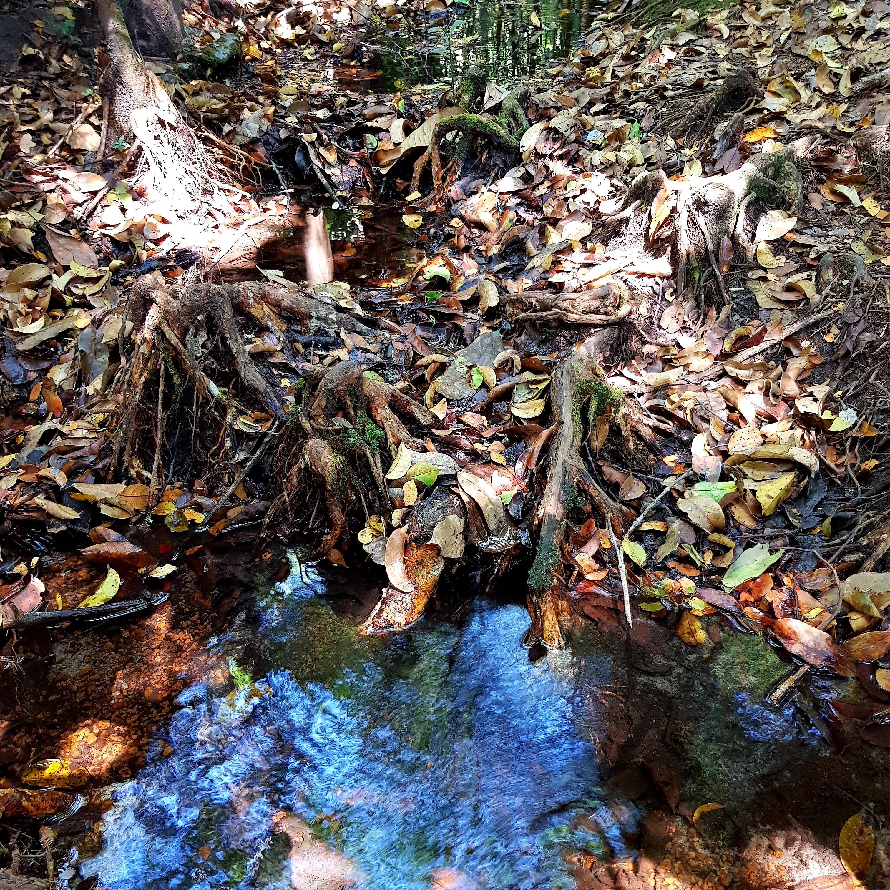

Photo Gallery
Explore images of the Zambezi Source



A modest spring bubbles through leaf litter deep in a cryptoforest. From here, the Zambezi begins its 2,574-kilometre journey to the Indian Ocean — Africa's fourth-longest river, born from a trickle you could step across. On Independence Day 1964, this remote spot became a national shrine. The wellspring of a river, and a nation.
After the drive — and it is a drive — you arrive expecting grandeur. Instead, you find a spring. Water seeping from black earth beneath tangled roots, pooling in a shallow depression no larger than a bathtub, dappled by sunlight filtering through the canopy above. This is it. This is where it begins.
The Zambezi rises in a dambo — a seasonally waterlogged depression — within one of Africa's most important botanical reserves. The cryptoforest surrounding the source reaches 24 metres high, its dense canopy sheltering endemic species found nowhere else: the flowering Dissotis glandulosa and the fern Elaphoglossum zambesionaum. The site is one of fifty reserves selected under the International Biological Programme as a best-preserved example of major vegetation types.
From this humble beginning, the river will flow for 2,574 kilometres through six countries before reaching the Indian Ocean. It will become the Barotse floodplain, the thundering Victoria Falls, the engineered expanse of Lake Kariba. Eight countries share its basin. But here, at the source, you can cup the Zambezi in your hands.
The country takes its name from the river. So when Zambia gained independence at midnight on 24 October 1964, this remote spring became a site of national pilgrimage. A monument was unveiled that same day — a stone cairn bearing a copper plaque with an inscription dedicating the site to "those people, men and women, who by their personal sacrifice enabled independence to be achieved."
The choice was deliberate. The Lunda name for the river, Yambezhi, means "heart of everything." Where better to mark the birth of a nation than at the source of the waters that gave it its name? Simon Mwansa Kapwepwe reportedly suggested the name Zambia at a meeting at Mulungushi Rock — derived from the river that defined the territory.
The monument stands in a clearing near the visitor centre, a Zambian flag flying above the cairn. It is a modest structure — appropriate, perhaps, for a site that celebrates origins rather than achievements. The plaque notes that the monument stands "at the source of the Zambezi River from which Zambia has derived its name and which, with its great tributaries, has played so large a part in the life and history of its people."
The Visitor Information Centre near the entrance provides displays on the Zambezi's ecology and significance. From here, boardwalks and suspended bridges lead through the swamp forest to the source itself.
Well-maintained wooden walkways keep feet dry while protecting the fragile forest floor. Carved wooden signs — including a delightful pointing hand marking "SOURCE" — guide visitors along the trail. The walk is short but atmospheric, the canopy filtering light into shifting patterns on the boardwalk below.
At the source, a simple marker identifies the spot. The spring itself needs no embellishment. Watch the water emerge, photograph the roots and leaf litter, reflect on the journey this water will make.
Beyond the source, trails follow the infant river as it gathers strength. Within metres, it becomes a recognisable stream. A tree spans the water — visitors love to photograph themselves standing atop what is, technically, a bridge over the mighty Zambezi.
The Zambezi has shaped the history of south-central Africa for millennia. Its floodplains supported the Lozi kingdom; its rapids marked boundaries and barriers; its waters carried trade and travellers. David Livingstone followed its course to Victoria Falls in 1855, opening the interior to European attention.
The name itself carries meaning. The Lunda call it Yambezhi — "heart of everything" — though other derivations exist. The Tonga called it Kasambabesi, the great river. Portuguese explorers, reaching Mozambique in the sixteenth century, rendered it as Zambeze.
The declaration of the source as a National Monument in 1983 — and its inclusion on the UNESCO Tentative List — recognises both its ecological significance and its role in national identity. Few natural features carry such symbolic weight.
The source lies 53 kilometres northwest of Mwinilunga along a dirt road. The road has been improved but remains challenging in wet season. A 4×4 is strongly recommended November–April; in dry season, a high-clearance 2WD can manage with care. From Mwinilunga, follow signs toward Ikelenge.
For the committed explorer, the DRC border lies just north of the source — an international boundary marker allows visitors to stand in two countries simultaneously.
North-Western Heritage Circuit: Zambezi Source → Nyambwezu Falls (40km) → Chifubwa Stream Cave (near Solwezi) → West Lunga National Park
Source to Sea Concept: Zambezi Source → Barotseland → Victoria Falls — follow the river's journey across Zambia
Explore images of the Zambezi Source